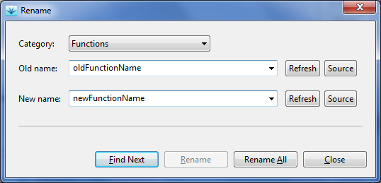

Renaming of identifiers
If a name of a function, variable, data type, or HIL parameter changes in
the source code, or winIDEA setting, testIDEA can rename all
occurrences in all test specifications. Command iTools | Rename opens
the rename dialog:

First we select category and enter old and new names. Then we can
rename items one by one, or all at once. The item to be renamed is
shown in the main testIDEA window.